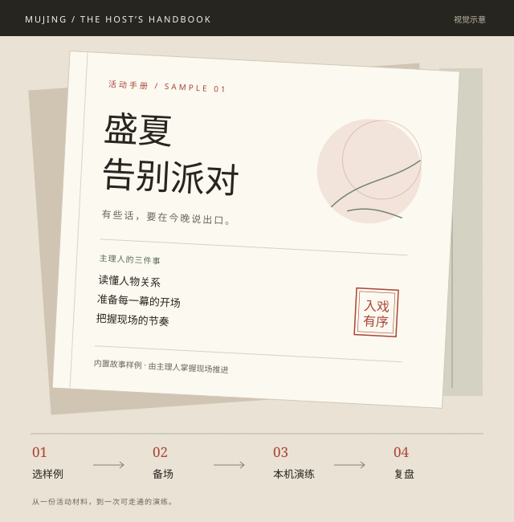

开场前 / 可判断
这场适合谁
先看人数、时长与主题，选中适合现场的活动，再投入阅读。
给线下沉浸式活动主理人的工作台。
把故事、角色与主持节奏放在一处，让备场、演练、复盘成为一条能走通的路径。

从主理人的开场任务出发，
重新组织产品入口。
内容生成只是起点。
主理人还要知道：现在该做什么。
设想一场朋友聚会即将开始：主理人需要确认人数、读懂人物关系、准备每幕主持词，再把信息交给合适的人。即使已有完整故事，准备是否充分、现场如何推进，仍然需要明确的操作顺序。
先看人数、时长与主题，选中适合现场的活动，再投入阅读。
把角色与主持资料放进备场流程，让开场前的确认有据可依。
根据真实操作回看幕进度与事件记录，为下一次演练留一份依据。
从《盛夏告别派对》或《消失的会议室》开始。公开 Demo 用预置内容保留完整的操作路径，让你先判断工作流是否好用。
比较主题、人数与时长。先决定这是不是适合本次聚会的活动。
得到 / 一个明确的活动起点
读角色与每幕主持资料，核对人数和准备项，再进入现场。
得到 / 开场前的准备清单
补齐演示角色，由主理人开始、暂停和推进，切换视角查看信息。
得到 / 一次可控的流程演练
查看这次演练的时长、幕进度与事件。有多少记录，就呈现多少。
得到 / 来自本次操作的记录
体验提示：这是单浏览器的模拟演练，不需要邀请真实玩家；它不会创建可跨设备加入的线上房间。
从选样例开始 ↗每个取舍都服务于同一个目标：
主理人知道正在发生什么。
第一次打开就面对空白配置，会把理解成本提前给用户。入口提供两种活动样例，让人数、时长与内容都能先看见。
取舍 / 公开版暂不开放实时 AI 生成，优先验证活动工作流。
看过故事不等于能主持。把人物、幕结构与主持资料放在开场之前，经过备场确认再进入演练，减少在现场来回找资料的需要。
取舍 / 保留必要的准备步骤，不追求一键跳过所有判断。
活动可能需要等待、解释或临时调整。开始、暂停、推进与结束都交给主理人，状态和结果明确可见。
取舍 / 当前演练由人工控制，不将本地模拟包装为实时 AI 主持。
演示边界：这些视角共用当前浏览器的本地数据，不代表已实现跨设备同步或正式的角色权限隔离。
把产品意图、已提供的证据，
以及待验证假设分开说明。
两套内置样例、备场确认、角色预览、主理人控制与演练记录。无需登录，可直接进入体验。
无实时 AI 服务；复盘基于本地记录，不提供 AI 生成建议。数据保存在当前浏览器，不是云端存档。
早期 MVP 探索过分阶段生成、角色材料与现场运行结构。本页保留一份此前已公开的生成日记节选，作为内容产出的具体例子。
原页面记载的「约 16 分钟 / 场」来自原型端到端探针，不是本次公开 Demo 的能力，也不是生成耗时承诺或 SLA。
早上给中班的小朋友上手工课，乐乐偷偷塞给我一朵用彩纸折的向日葵，说祝老师去山里也能每天看到太阳。我捏着那朵皱巴巴的纸花躲在教具室哭了十分钟……
下午收拾行李的时候犹豫了三次，还是把装集体照的天蓝色相册盒塞进了背包最内层……出门前收到支教队的通知，说下周一会派车来接，我对着镜子练了好几遍"我要去支教两年"的开场白，每次说到一半就卡壳。
刚才轰趴馆玄关的灯很暖，大家进门的时候都笑着抱我，我攥着背包肩带的手一直出汗，那句到了嘴边的话，还是咽回去了。
节选沿用原产品展示页。它说明角色材料的内容形态，不代表真实场次效果，也不是由当前静态 Demo 实时生成。
下一步需要验证：主理人能否独立完成备场、现场是否仍需额外找资料、复盘是否能帮助调整下一场活动。当前没有公开的真实场次统计，暂不声称效率、留存或营收提升。
选一个样例，走完备场、推进和结束，看看这套工作流是否顺手。